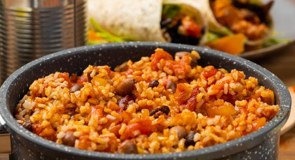

One-Pot Canned Bean Mix
Back to Index

This easy to make bean recipe uses only canned ingredients that can be
stored in any pantry to make a healthy, filling, and versatile mix
which can be eaten alone, over rice, or used creatively in other
recipes.
Ingredients
- Canned Beans
- Canned Tomatos
- Frozen Spinach
- Half-can of water
- Onion Powder
Instructions
- This recipe is great! Just toss everything into the pot
- Stir well
- Cook over medium-low for 20-30 minutes, or longer
-
Optionally, you can double or triple the recipe and just cook
for longer